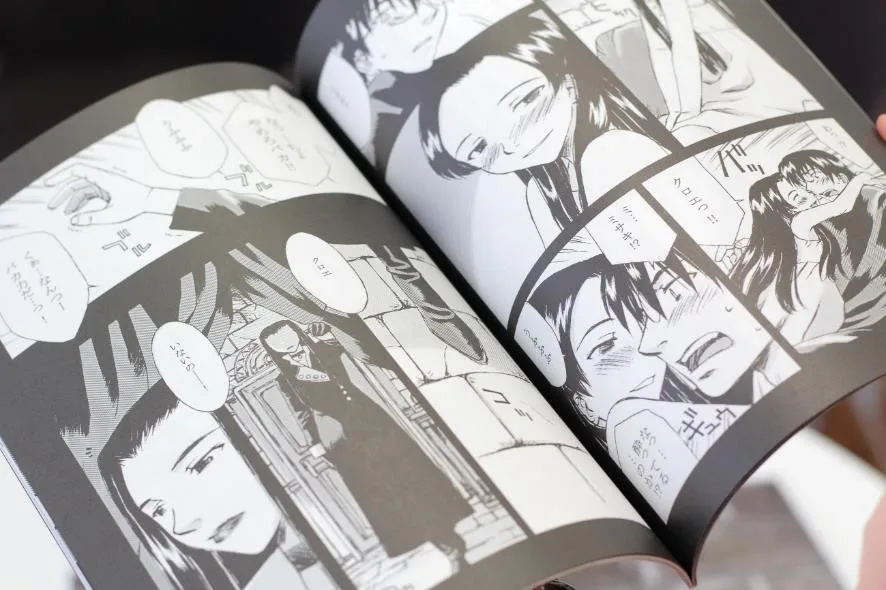
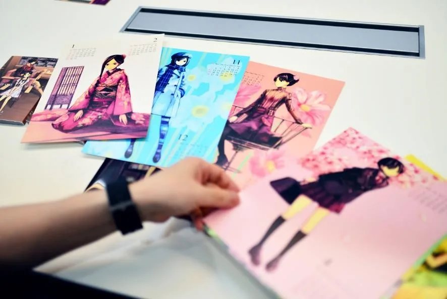
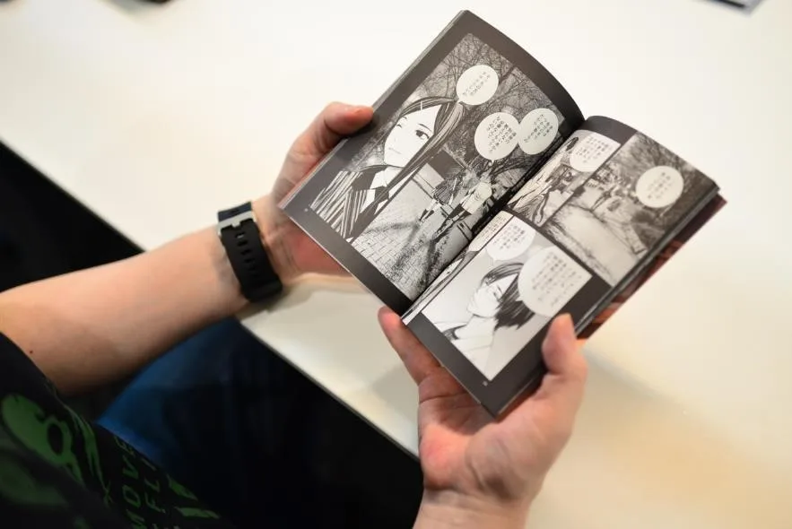
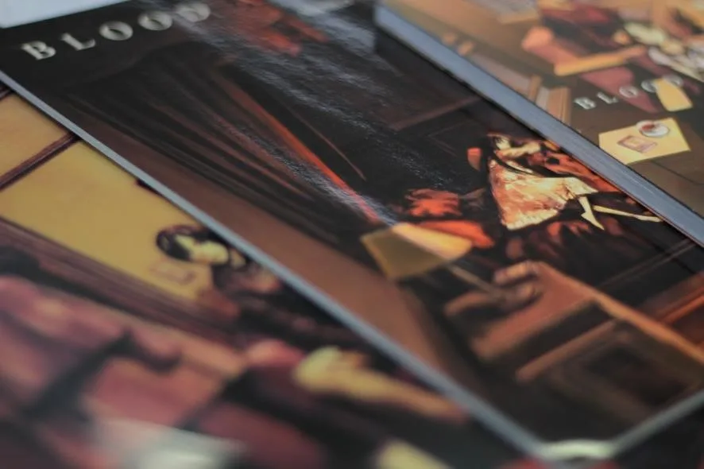
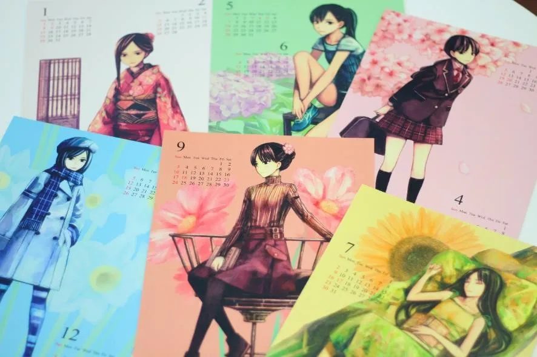
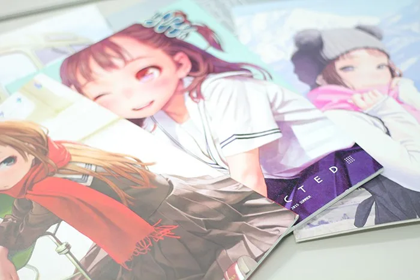
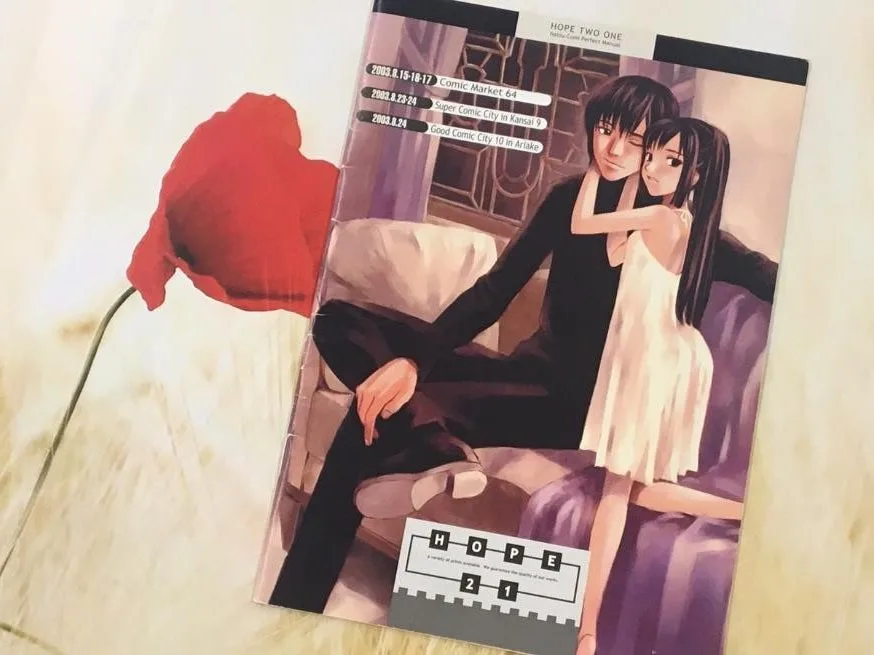
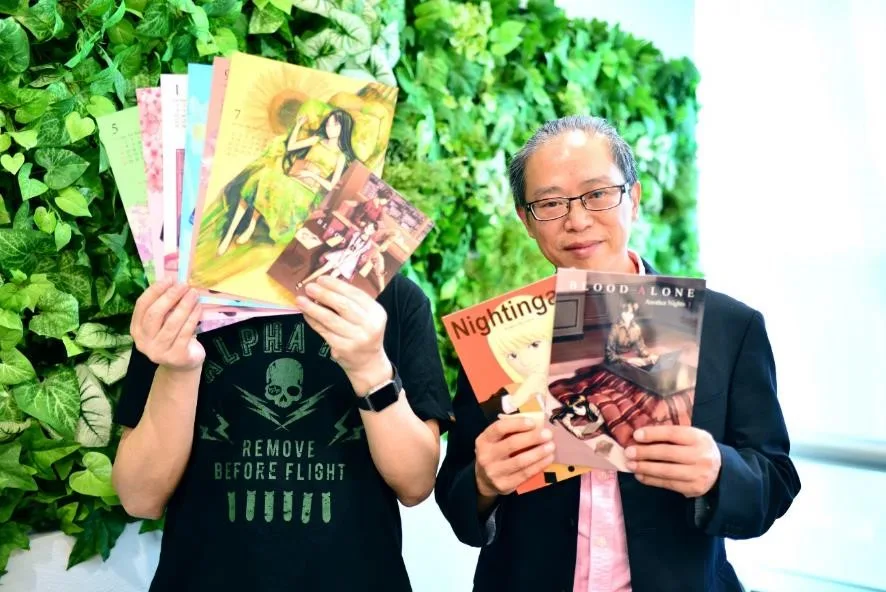

HOPE TALK
第一線で活躍するクリエイターたちは、一体どのようにして自身のキャリアを切り拓いてきたのでしょうか。
現役のクリエイターたちを招き、彼らを「印刷会社」という立場から支えるホープツーワンの熟練社員、出口竜がその秘密に迫る対談企画「ホープトーク」。
今回のゲストは、「FUTURE SHOCK」「ブギーポップ・デュアル 負け犬たちのサーカス」「クロノスヘイズ」といった作品を世に送り出してきた漫画家の高野真之さんです。高野さんが描き出すキャラクターたちは、“リアリティ”と“萌え”という両極的な魅力を放ちます。また、どこかノスタルジックな気持ちにさせるセピアを基調としたトーンも特徴的。その作風に迫ると、高野さんの作品に対する独自の理念や、印刷へのこだわりが見えてきました。
高野真之
1999年「月刊コミック電撃大王」に掲載された前後編の読切作品「FUTURE SHOCK」で漫画家デビュー。
「ブギーポップ・デュアル 負け犬たちのサーカス」「クロノスヘイズ」といった作品を手がけ、現在は月刊コミック電撃大王やイブニングで連載されてきた「BLOOD ALONE」を、自費出版と電子書籍（Kindle）に舞台を移して製作中。2018年の完結を目指して継続している。
出口竜
本社工場勤務。入社二十云年。製本を経験してから印刷へ。
主に表紙多色刷を担当し、その後製版も学ぶ。
以下、質問は出口、回答は高野真之さんです。
目次
・物心ついたときから自然と漫画家の道へ
・「読みやすさ」と「リアリティ」へのこだわり
・「印刷」は高野作品の重要な要素
・「挫折」から学んだ、描き続けるために大切なこと
・まとめ
物心ついたときから自然と漫画家の道へ

▲2000年発表の「nightshift」のワンシーン
—それでは早速ですが、高野さんが絵を描き始めたのはいつ頃からですか？
「もう物心ついた頃からです。当時大人気だった「マジンガーZ」とかを鉛筆で描いて遊んでいました。それが発展して、高校生くらいから“つけペン”を使って本格的に描くようになり、雑誌などにイラストを投稿するようになりました。」
—そういえば、昔はイラストを雑誌に投稿するという文化がありましたね。懐かしい。
「そうそう、投稿して掲載されるとすごく嬉しいんですよ（笑）ただ、漫画を描き上げたのは遅くて20歳過ぎてからだと思います。」
—高野さんは確か大学に通われていましたよね？当時進路について迷うことはありませんでしたか？
「おっしゃる通り、高校卒業後は地元・広島から上京して大学に通っていました。しかし、漫画家になるつもりで東京に出てきたので、そういった意味での迷いは全くありませんでした。在学中にも小さなカットのお仕事などはいただいていたのですが、結局そのまま大学をドロップアウトし、アシスタントとして働き始めるようになりました。」
—アシスタント時代の思い出はありますか？
「アシスタントのときは本当に忙しくて、休みは日曜日だけでした。自分の漫画を描く時間も全くありませんでしたが、憧れだった業界のプロの現場で働けていることが嬉しくて、辛かった記憶はあまりないですね。私以外のスタッフは、アシスタントとはいえ全員が独立したプロの漫画家でもあるというハイレベルな現場だったので、私も短期間ですごく上達させてもらえたと思います。」
「読みやすさ」と「リアリティ」へのこだわり
—現在作品作りにおいてこだわっていることはありますか？
「とてもシンプルな考えですが、自分が面白いと思うものを描くことを何よりも大切にしています。自分が読者としての視点で本当に読みたいと思うもの、好きだと思うものを描き続けたいと思っています。」

—例えば流行などを意識して作品を描くことはないですか？
「『意識的に』 というのはないですね。ただ、例えば「BLOOD ALONE」 を描き始めた頃は、映画の『レオン』や『インタビュー・ウィズ・ヴァンパイア』があり、小説では『ソーニャ・ブルー』シリーズなど、自分がその時々で好きなものの雰囲気は、作品に反映されていると思います。」
▲ノスタルジックな雰囲気漂う「BLOOD ALONE」のイラスト。高野さんが当時ハマっていたという「レオン」「インタビュー・ウィズ・ヴァンパイア」の少しダークな世界観が反映されている。
—確かに、そういわれて「BLOOD ALONE」を見ると影響を受けているのがわかります。面白いですね。そのほかにこだわりはありますか？
「具体的な表現方法の面でいうと、とにかく読みやすいことを大切にしています。スタンダードなコマ割りしか使わないし、落ち着いた雰囲気に見えるように、斬新なパースも使いません。浦沢直樹先生のように、ベーシックなスタイルを心がけています。」

—おっしゃる通り高野さんの作品はとても読みやすいです。一方で、ストーリーの中で科学的な内容が登場することがありますが、そうした難しい説明もしっかりとなされていますよね。
「僕はノンフィクションの科学ネタが好きなので、科学的な書籍はよく読みます。新たな発展とともに変わる分野なので、マニアの人にも受け入れてもらえるように、常に最新の情報を取り入れて知識をアップデートするように心がけています。」
「印刷」は高野作品の重要な要素
—高野さんの作品といえば、茶系の色合いも特徴だと思います。
「そうですね。これは私の好みなんですけど、キャラクターは「リアル」「萌え」「カッコいい」という要素をブレンドさせつつ、全体のトーンをセピア調で統一することで、ノスタルジックな世界観を演出しています。この雰囲気を実現させる上で、印刷がとても大切なんですよ。」

▲茶系のセピアトーンが、高野作品ならではの世界観を演出している。
「漫画家なら、『自分がパソコンのモニターで作成したイラストと、実際に印刷されたイラストの色が全然違う！』という経験をしたことがある人は少なくないと思いますが、ホープツーワンさんはいつも、私がイメージしている通りの色を見事に再現してくれます。『こんなに綺麗に色が出るんだ。』と仕上がりを見て驚くんですよね。また、紙質もとても良くて、何といっても白色度が違います。インクが映えるので、繊細な表現もしっかりと叶えてくれるんです。」

—嬉しいお言葉を…光栄です。最初に私たちに依頼してくださったキッカケは覚えてらっしゃいますか？
「初めて自費出版をしようと考えたとき『上手な作家さんはどこに印刷をお願いしているのだろう』と考えました。そこで、コミケの会場を回って本が積んである段ボールを見つけては印刷会社の名前を調べました（笑）そんな中で、私が当時から大ファンだった村田蓮爾先生のスペースを見に行ったら、箱に「ホープツーワン」と書いてあり、「ここだ！」と即決です。こんなにすごい方が頼む印刷屋さんなら間違いないだろうと」

▲高野さんが大ファンだという村田先生の作品。村田先生のインタビュー記事はこちら↓
https://hope21.jp/hopemedia/hopetalk/post_17/
「ホープツーワンさんはデータ入稿がしやすいというのも、ずっとお願いしている理由です。ホームページでは入稿に関する注意事項がとてもわかりやすく解説されていて、入稿の方法もデータをドラッグ＆ドロップするだけ。簡単でミスのしようがありません。入稿の手間が省ける分、漫画家がやるべき最終チェックの作業にしっかりと時間を使えます。」

▲2003年のホープツーワンの入稿マニュアル。表紙は高野さんが手掛けた。
「挫折」から学んだ、描き続けるために大切なこと
—18年という漫画家としてのキャリアの中で、失敗やスランプはありましたか？
「そうですね。実は最近体調を崩してしまい、漫画を描けなくなってしまうということがありました。寝ずに30時間以上描くような日々が続いてしまい、納期ギリギリで納得できない作品を編集者に納めては、また次の話に取り掛かるという良くないサイクルになってしまいました。締め切りを守れず多くの人に迷惑をかけてしまったあげく、クオリティもどんどん下がり、私自身大好きな漫画を描くことが嫌になってしまうという、最悪の状況でした。」
—なるほど。高野さんはそのスランプをどのようにして乗り越えたのでしょうか？
「まだ乗り越えている最中です。今は自分で責任が取れる範囲で、コツコツと地道にやっていくようにしています。ただ、良質な仕事を長く続けるには、よく寝てキチンとした食事をして適度に仕事をするという、規則正しい生活スタイルが大切だと、自分自身の“しくじり”から学びました。」
—そんな高野さんの経験を踏まえて、漫画家・イラストレーターを目指している方にアドバイスやメッセージがあるとすると、どんなことが言えるでしょうか？
「納期に間に合わせるため、どうしても徹夜などをせざるを得ないときもあるかとは思いますが、無理をすると私のような負のサイクルに陥り、結果作品のクオリティがどんどん低下してしまいます。規則正しい生活と健康な身体が良い作品を産むということを覚えておいてほしいですね。」
—それでは最後に、先生が思い描く「夢の一冊」とは、どんな作品でしょうか？
「そうですね。現在進めている「BLOOD ALONE」が完結したら、B5サイズの愛蔵版をつくってみたいです。まずは完結させることが第一ですが！」

■まとめ
今回のインタビューで印象的だったのは、プロを目指す方々へのアドバイスとして「健康管理や睡眠」の重要性を語ってくれたこと。創作に没頭する意欲ももちろん重要ですが、自分の限界を超える作業は結果的にプロとしての寿命を縮めてしまいます。
身体と心が整わなければ、高野さんが体験されたような負のスパイラルに陥ってしまいます。プロとして良質な作品を作り続けるには、自分の身体と心を整えることが何よりも重要なのです。
プロの漫画家・イラストレーターを目指す方は、「規則正しい生活と健康な身体が良い作品を産む」ということを覚えておいてもよいのではないでしょうか？
高野真之先生
1999年「月刊コミック電撃大王」に掲載された前後編の読切作品「FUTURE SHOCK」で漫画家デビュー。
「ブギーポップ・デュアル 負け犬たちのサーカス」「クロノスヘイズ」といった作品を手がけ、現在は月刊コミック電撃大王やイブニングで連載されてきた「BLOOD ALONE」を、自費出版と電子書籍（Kindle）に舞台を移して製作中。2018年の完結を目指して継続している。